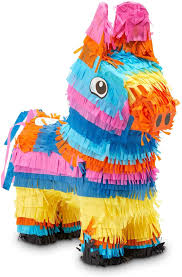

Sobre Piñatas Valle de Santiago
Ubicada cerca del crater de la Alberca, Piñatas Valle de Santiago trae para el mercado lo mejor en piñatas personalizadas para fiestas temáticas. Fundada en 2017, piñatas Valle de Santiago ya es destaque en la ciudad y conquista nuevos clientes diariamente.
Nuestra misión es:"Proporcionar una nueva experiencia en tus fiestas, brindando calidad y servicio a cada uno de nuestros clientes".
Ofrecemos piñatas personalizadas, observamos constantemente las cambios en las tendencias para poder brindarte un mejor servicio, garantizando calidad y satisfaccion.
Nuestra Ubicacion
Nuestro establecimiento esta ubicado cerca del crater de la Alberca
Diferenciales
- Atencion personalizada a los clientes
- Localizacion
- Puntualidad
- Limpieza